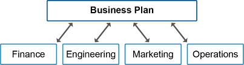
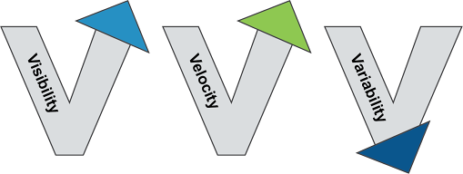

The business plan ties organizational and business strategies to operations. Key functions (finance, engineering, marketing, manufacturing, supply chain) contribute to and are aligned by it.

Exhibit 8-3: Impact of Business Plan on Key Functions
Porter’s Five Fundamental Elements: Customer service, Sales channels, Operations and logistics, Competition, and Cost structure. Used to assess an organization’s fitness for a competitive strategy.
Three Vs of Supply Chain Management

Exhibit 8-4: Three Vs of Supply Chain Management
Visibility (ASCM): The ability to view important information throughout a facility or supply chain no matter where in the facility or supply chain the information is located.
Velocity (ASCM): A term used to indicate the relative speed of all transactions, collectively, within a supply chain community. A maximum velocity is most desirable because it indicates a rapid response to customer needs.
- Variability: The natural tendency for results to fluctuate above/below an average. SC management works to reduce variability in both supply and demand
- Additional Vs: Vocalization (communication between partners), Variety (right product mix), Volume (expand/contract to meet demand changes)
Benefits of SC management: streamlined operations, improved risk management, increased sustainability. Better SC management provides increased visibility/velocity and reduced variability, leading to smoother day-to-day functioning.